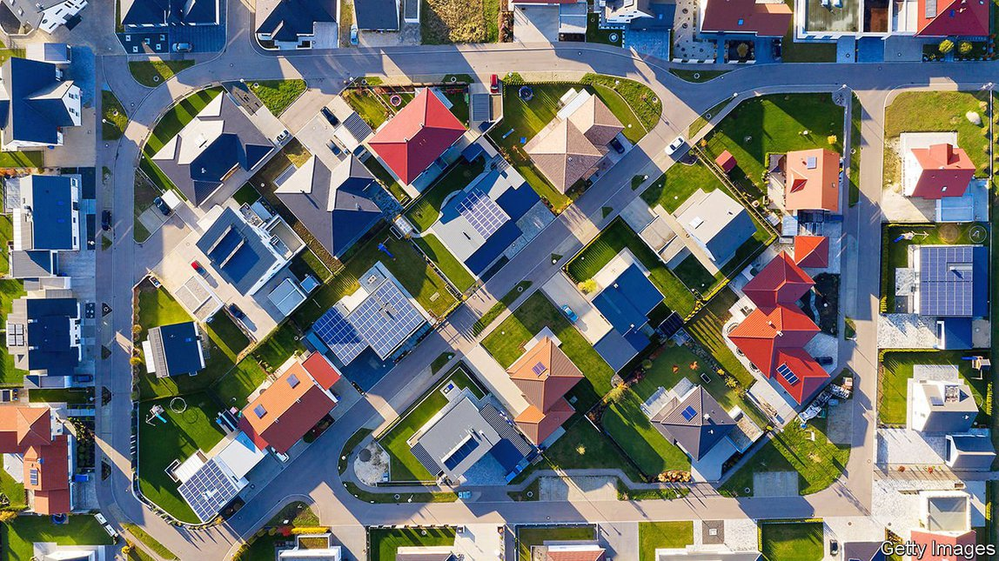
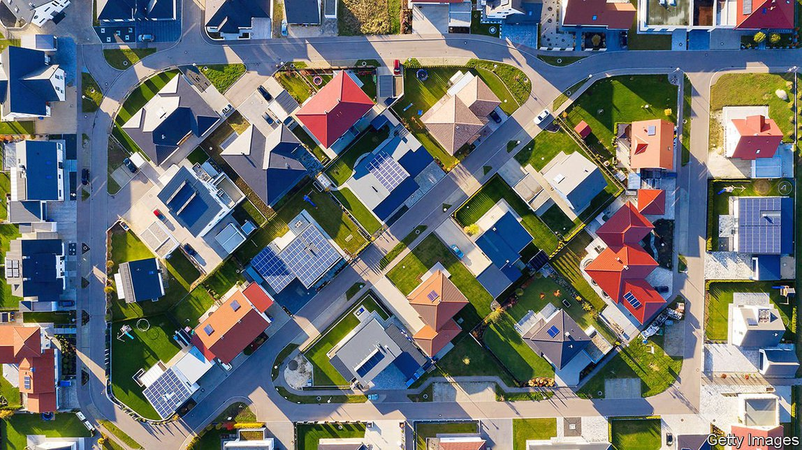
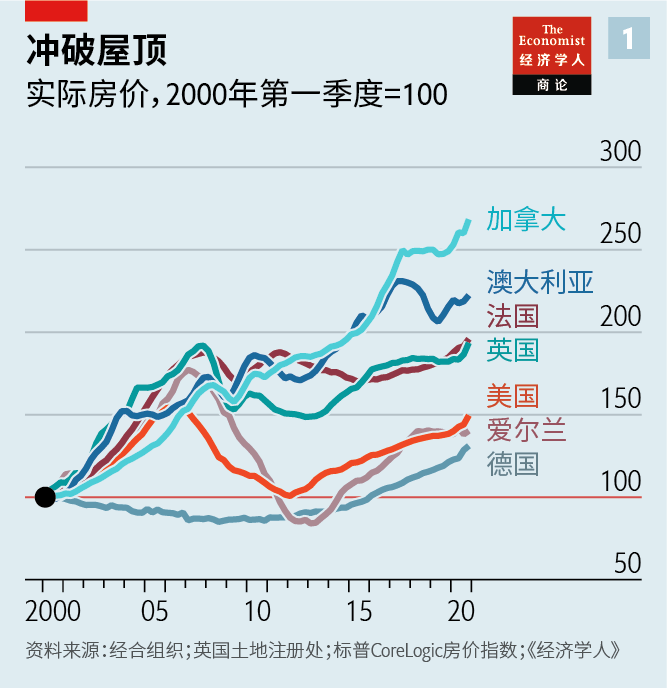

2021-04-21T03:04:50+00:00
The race for space
追逐空间
追逐空間
House prices in the rich world are booming
富裕世界房价大涨
富裕世界房價大漲
Unusually, suburbs not cities are feeling the heat
与以往不同的是，感受到这股热浪的是郊区而非市区
與以往不同的是，感受到這股熱浪的是郊區而非市區
 
ON A SUNNY afternoon in Kingsmere, a new suburb of Bicester, a town 50 miles (80km) north-west of London, the streets are abuzz with people strolling and children playing. In ten years 1,600 homes have been built on the site, and another 900 are soon to follow. In the sales office for Bovis Homes, Flip Baglee says she has “never known it to be so busy”. Sentiment in Rhinebeck, a village 80 miles north of New York City, is similarly buoyant. Many of the properties advertised in the window of Gary DiMauro Real Estate—from mansions to cottages—are already taken.
一个阳光明媚的下午，在伦敦西北50英里（80公里）的比斯特镇（Bicester）的新兴郊区金斯米尔（Kingsmere），街上到处是闲逛的人和嬉戏的孩子。过去十年里这里新盖了1600栋房子，很快还要再盖900栋。在博维斯家园（Bovis Homes）的售楼处，弗丽普·巴格里（Flip Baglee）说她“从没想到过会这么忙”。在纽约以北80英里的村庄莱茵贝克（Rhinebeck），情绪同样高涨。加里·迪马罗房地产公司（Gary DiMauro Real Estate）的广告橱窗里贴出的物业中，不管是豪宅还是小屋，很多都已售出。
一個陽光明媚的下午，在倫敦西北50英里（80公里）的比斯特鎮（Bicester）的新興郊區金斯米爾（Kingsmere），街上到處是閑逛的人和嬉戲的孩子。過去十年里這裡新蓋了1600棟房子，很快還要再蓋900棟。在博維斯家園（Bovis Homes）的售樓處，弗麗普·巴格里（Flip Baglee）說她“從沒想到過會這麼忙”。在紐約以北80英里的村莊萊茵貝克（Rhinebeck），情緒同樣高漲。加里·迪馬羅房地產公司（Gary DiMauro Real Estate）的廣告櫥窗里貼出的物業中，不管是豪宅還是小屋，很多都已售出。
Kingsmere and Rhinebeck are not the only places warming up. American house prices rose by 11% in the year to January, the fastest pace for 15 years. Those in Britain increased by 8% last year, and in Germany by 9%. The pattern is seen in much of the rich world (see chart 1). Across the 25 countries tracked by The Economist, real house prices have risen by an average of 5% in the latest 12-month period.
房地产升温的地点不止金斯米尔和莱茵贝克。截至今年1月的一年中，美国房价上涨了11％，是15年来最快的涨幅。去年英国房价上涨了8％，德国上涨了9％。在大多数富裕国家都可以看到这种趋势（见图表1）。在本刊追踪的25个国家中，最近12个月内实际房价平均上涨了5％。
房地產升溫的地點不止金斯米爾和萊茵貝克。截至今年1月的一年中，美國房價上漲了11％，是15年來最快的漲幅。去年英國房價上漲了8％，德國上漲了9％。在大多數富裕國家都可以看到這種趨勢（見圖表1）。在本刊追蹤的25個國家中，最近12個月內實際房價平均上漲了5％。
In many countries, rises have been rapid enough to attract the attention of politicians and central bankers. In a break with the pattern of the past decade it is prices in less populated, but still commutable, places, rather than city centres, that are rising most. Covid-19 seems to have set off a quest for space that could outlast the pandemic.
在许多国家，房价上涨之快已经引起了政客和央行官员的注意。与过去十年房价波动的模式不同，这一次涨幅最大的不是市中心，而是人口密度较低但通勤仍算便利的地方。新冠疫情似乎触发了对宽敞居住空间的追求，这一趋势在疫情过后可能仍会持续。
在許多國家，房價上漲之快已經引起了政客和央行官員的注意。與過去十年房價波動的模式不同，這一次漲幅最大的不是市中心，而是人口密度較低但通勤仍算便利的地方。新冠疫情似乎觸發了對寬敞居住空間的追求，這一趨勢在疫情過後可能仍會持續。
At first glance, the robustness of house prices in the face of the economic turmoil inflicted by covid-19 might seem baffling: property prices typically move in tandem with the economy. But furlough schemes and fiscal stimulus have limited distressed sales this time. Interest rates are ultra-low: in America those on 30-year mortgages are 1.5 percentage points below their level in 2010. Lockdowns and the reduced opportunity to spend mean that those who have kept their jobs have stashed away cash. Lucian Cook of Savills, a property consultancy in Britain, remarks that home values are being “driven by the haves rather than the have-nots”. In America, 14% of all mortgage applications made in February were for second homes, twice the share in April last year.
乍一看，在疫情造成经济动荡的背景下，房价走势强劲似乎令人困惑，因为房价通常与经济同步变动。但这一次，员工强制休假和财政刺激措施减少了屋主因缺钱而着急廉价卖房的情形。利率处于超级低位：美国30年期房贷的还款人如今支付的利率比2010年时还低1.5个百分点。封城加上花钱机会减少，使得那些保住了工作的人存下了不少钱。英国房地产咨询公司第一太平戴维斯（Savills）的露西安·库克（Lucian Cook）指出，目前房价是被“有房一族而非无房一族推动的”。在美国，2月提出的所有房贷申请中有14％是为了买二套房，是去年4月占比的两倍。
乍一看，在疫情造成經濟動蕩的背景下，房價走勢強勁似乎令人困惑，因為房價通常與經濟同步變動。但這一次，員工強制休假和財政刺激措施減少了屋主因缺錢而着急廉價賣房的情形。利率處於超級低位：美國30年期房貸的還款人如今支付的利率比2010年時還低1.5個百分點。封城加上花錢機會減少，使得那些保住了工作的人存下了不少錢。英國房地產諮詢公司第一太平戴維斯（Savills）的露西安·庫克（Lucian Cook）指出，目前房價是被“有房一族而非無房一族推動的”。在美國，2月提出的所有房貸申請中有14％是為了買二套房，是去年4月佔比的兩倍。
As covid-19 spread and many countries locked down, people’s homes also became their offices, schools, gyms and bakeries. Many therefore spent more on their properties. Revenues for Home Depot, America’s largest DIY store, rose by 20% last year. In Britain permissions granted for home improvements, such as extensions, increased by a third in 2020 compared with the average in 2016-19, reckons Barbour ABI, a market-research firm.
随着疫情传播以及多国实施封锁，人们的住所同时也变成了办公室、学校、健身房和面包房。因此，许多人增加了在住房上的花费。美国最大的DIY商店家得宝（Home Depot）去年营收增长了20％。市场研究公司Barbour ABI估计，2020年，英国批准的扩建等房屋改建工程数量较2016至2019年间的平均水平增加了三分之一。
隨着疫情傳播以及多國實施封鎖，人們的住所同時也變成了辦公室、學校、健身房和麵包房。因此，許多人增加了在住房上的花費。美國最大的DIY商店家得寶（Home Depot）去年營收增長了20％。市場研究公司Barbour ABI估計，2020年，英國批准的擴建等房屋改建工程數量較2016至2019年間的平均水平增加了三分之一。
Other people sought new places to live. Homes in America have taken an average of 47 days to sell since May, compared with 59 days in the previous year. In Britain a temporary holiday on stamp duty (a housing-transaction tax) caused the volume of sales to rise in the final quarter of 2020 to a 14-year high.
其他人则在寻找新的住所。自去年5月以来，美国一套房屋的销售周期平均为47天，而之前一年为59天。在英国，临时实施的印花税（一种房产交易税）减免假期让2020年最后一个季度的销量升至14年来的最高点。
其他人則在尋找新的住所。自去年5月以來，美國一套房屋的銷售周期平均為47天，而之前一年為59天。在英國，臨時實施的印花稅（一種房產交易稅）減免假期讓2020年最後一個季度的銷量升至14年來的最高點。
For those wanting more space the best solution has been to move out of city centres. Prices per square foot in London, for instance, are 40% higher than in surrounding counties. House prices in less densely populated, but still commutable, areas of Britain have risen faster over the past year than in more populous ones. A similar pattern is also evident in America (see chart 2).
对于那些想要住得更宽敞的人来说，最好的方案是搬出市中心。以伦敦为例，那里房价要比周边郡县高40％。在过去的一年中，英国那些人口密度较低但仍在通勤范围内的地区的房价涨速要快过人口更稠密的地区。类似的趋势在美国也很明显（见图表2）。
對於那些想要住得更寬敞的人來說，最好的方案是搬出市中心。以倫敦為例，那裡房價要比周邊郡縣高40％。在過去的一年中，英國那些人口密度較低但仍在通勤範圍內的地區的房價漲速要快過人口更稠密的地區。類似的趨勢在美國也很明顯（見圖表2）。
That bucks a trend of the past decade, when megacities such as London and New York surged ahead of quieter locations—a reversal that Zillow, an American property-listings firm, calls the “great reshuffling”. House prices outside Germany’s seven biggest cities rose by 11% last year, compared with 6% within them. Prices in Sydney’s northern beaches, within commuting range of the city, are up by 10%.
这与过去十年的趋势相反。那会儿伦敦和纽约等特大城市的房价要比那些更僻静的地区冲得更快。美国房地产信息公司Zillow把眼下这种逆转称为“大洗牌”。去年，德国最大的七个城市以外地区的房价上涨了11％，而这七个城市的房价仅上涨了6％。在处于悉尼通勤范围内的北部海滩，房价上涨了10％。
這與過去十年的趨勢相反。那會兒倫敦和紐約等特大城市的房價要比那些更僻靜的地區沖得更快。美國房地產信息公司Zillow把眼下這種逆轉稱為“大洗牌”。去年，德國最大的七個城市以外地區的房價上漲了11％，而這七個城市的房價僅上漲了6％。在處於悉尼通勤範圍內的北部海灘，房價上漲了10％。
By contrast, house prices in central London and Sydney rose by just 4% and 3% last year, respectively; those in Manhattan fell by 4%. Rental markets are cooling too. Rents for flats in Sydney fell by 5% last year. Those in Melbourne, which endured a 111-day lockdown last year, fell by 8%. Figures from Zillow suggest that rents fell by 9% in New York City and 15% in Manhattan in particular.
相比之下，伦敦和悉尼市中心的房价去年分别仅上涨了4％和3％，曼哈顿的房价还下跌了4％。租赁市场也在降温。悉尼的公寓租金去年下降了5％。墨尔本去年经历了111天的封城，租金下跌了8％。Zillow的数据显示，纽约市的租金降了9％，曼哈顿的降幅更是达到15％。
相比之下，倫敦和悉尼市中心的房價去年分別僅上漲了4％和3％，曼哈頓的房價還下跌了4％。租賃市場也在降溫。悉尼的公寓租金去年下降了5％。墨爾本去年經歷了111天的封城，租金下跌了8％。Zillow的數據顯示，紐約市的租金降了9％，曼哈頓的降幅更是達到15％。
The pandemic has disrupted some of the usual flows into cities. In the years before covid-19, London lost residents to the rest of Britain. But the outflows were made up for by people coming in from abroad. The pandemic, and perhaps Brexit, seem likely to have reduced the inflow. One estimate suggests that London’s resident population may have declined by 8% in 2020. Australia’s borders have been shut to non-residents since March 2020. Recent graduates, faced with the prospect of working from a shared home, may still be living with their parents.
疫情打断了一些惯常的向城市的人口流动。在疫情爆发之前的几年里，伦敦就已经出现了常住人口流向英国其他地区的情况。但从国外流入伦敦的人口抵消了人口外流。而疫情——也许还有英国脱欧——很可能减少了来到伦敦的外国人数量。一项估计表明，伦敦的常住人口在2020年可能减少了8％。自2020年3月起，澳大利亚的边境就已向非常住居民关闭。应届毕业生们看起来得在与他人合住的房屋中居家工作，目前可能仍与父母住在一起。
疫情打斷了一些慣常的向城市的人口流動。在疫情爆發之前的幾年裡，倫敦就已經出現了常住人口流向英國其他地區的情況。但從國外流入倫敦的人口抵消了人口外流。而疫情——也許還有英國脫歐——很可能減少了來到倫敦的外國人數量。一項估計表明，倫敦的常住人口在2020年可能減少了8％。自2020年3月起，澳大利亞的邊境就已向非常住居民關閉。應屆畢業生們看起來得在與他人合住的房屋中居家工作，目前可能仍與父母住在一起。
Outflows from cities have risen, too. A study by the Federal Reserve Bank of Cleveland finds that migration out of cities in America doubled to 56,000 people per month from March 2020 compared with the 2017-19 average.
城市人口外流也有所增加。克利夫兰联储的一项研究发现，与2017至2019年的平均水平相比，从2020年3月开始，美国城市每月外流人口翻了一番，达到5.6万人。
城市人口外流也有所增加。克利夫蘭聯儲的一項研究發現，與2017至2019年的平均水平相比，從2020年3月開始，美國城市每月外流人口翻了一番，達到5.6萬人。
Some of the flows to cities will pick up as the pandemic ends. Students and international migrants will return in droves. Some investors are therefore betting big on big cities. A new development in Manhattan selling large flats for $12m offers the “premier answer to post-pandemic living”. AXA Investment Managers, a firm that owns properties in 15 countries, has snapped up 1,233 flats in the heart of London, Britain’s largest residential site.
随着疫情消退，一些流入人口会重新增加。学生和国际移民将大批返回。因此，一些投资者大笔押注大城市。曼哈顿一个新楼盘的大户型公寓售价1200万美元，声称是“疫情后生活的上佳之选”。在15个国家拥有物业的安盛投资管理公司（AXA Investment Managers）已在英国最大的住宅区伦敦市中心购置了1233套公寓。
隨着疫情消退，一些流入人口會重新增加。學生和國際移民將大批返回。因此，一些投資者大筆押注大城市。曼哈頓一個新樓盤的大戶型公寓售價1200萬美元，聲稱是“疫情後生活的上佳之選”。在15個國家擁有物業的安盛投資管理公司（AXA Investment Managers）已在英國最大的住宅區倫敦市中心購置了1233套公寓。
Yet the allure of less-dense places seems likely to persist. Government advice to work from home, where in place, could be gone by the summer, but remote working may be here to stay. According to a survey of 20,000 employers around the world by Manpower, a recruitment firm, two-fifths of bosses plan to permit their employees to work from home at least some of the time. People might be willing to put up with longer commuting times in return for more living space or lower housing costs, if they are commuting less often. Suburban property prices would then inch towards those in the city.
然而，人口密度较低地区的吸引力看起来很可能会持续下去。有些地方的政府建议人们居家工作，这种号召到夏天可能就会取消，但远程工作模式也许会保留下来。招聘公司万宝盛华（Manpower）对全球两万名雇主的一项调查显示，五分之二的老板计划允许员工至少部分时间在家工作。如果通勤次数减少，人们可能愿意为更大的居住空间或更低的房价忍受更长的单次通勤时间。这样，郊区房价将慢慢接近市区房价。
然而，人口密度較低地區的吸引力看起來很可能會持續下去。有些地方的政府建議人們居家工作，這種號召到夏天可能就會取消，但遠程工作模式也許會保留下來。招聘公司萬寶盛華（Manpower）對全球兩萬名僱主的一項調查顯示，五分之二的老闆計劃允許員工至少部分時間在家工作。如果通勤次數減少，人們可能願意為更大的居住空間或更低的房價忍受更長的單次通勤時間。這樣，郊區房價將慢慢接近市區房價。
The fate of overall house-price growth could well rest with policymakers. Emergency support for homebuyers and homeowners will be withdrawn as the pandemic draws to a close: in Britain, tax holidays are due to end later in the year. Other countries may look to take the heat out of housing markets. The government in New Zealand, where prices are rising at an annual rate of 22%, has taken steps to dampen speculation. The governor of the Bank of Canada has worried about “excess exuberance”, and plans to watch the housing market closely. A fear of jeopardising the economic recovery could mean that policymakers tread gently for now. That would give the race for space more room to run. ■
房价总体上涨的走势很可能取决于政策制定者。随着疫情走向尾声，对购房者和屋主的紧急援助将终止。在英国，印花税减免假期将于今年晚些时候结束。其他国家可能会着手为住房市场降温。在房价年增长率达到22％的新西兰，政府已采取措施抑制投机行为。加拿大央行行长担心房市“过度繁荣”，并计划密切关注房市。由于担心危及经济复苏，决策者们可能会暂时出手谨慎。这会留给这场对空间的追逐更大的增长空间。
房價總體上漲的走勢很可能取決於政策制定者。隨着疫情走向尾聲，對購房者和屋主的緊急援助將終止。在英國，印花稅減免假期將於今年晚些時候結束。其他國家可能會着手為住房市場降溫。在房價年增長率達到22％的新西蘭，政府已採取措施抑制投機行為。加拿大央行行長擔心房市“過度繁榮”，並計劃密切關注房市。由於擔心危及經濟復蘇，決策者們可能會暫時出手謹慎。這會留給這場對空間的追逐更大的增長空間。